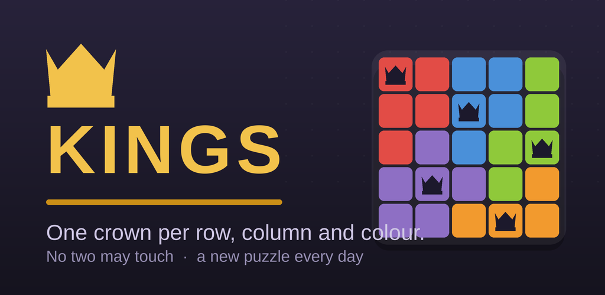

What is Kings?
Kings is a single-player logic puzzle game for Android, published by xBitsNL Gaming. It is a “Queens”-style puzzle: you fill a square board with crowns so that every row, every column and every coloured region contains exactly one crown, and no two crowns ever touch — not even diagonally. Every puzzle has a single solution that can be reached by pure reasoning, so you never have to guess.
Features
- Daily puzzle — the same board for every player on a given date, growing from 7×7 on Monday to 10×10 on Sunday.
- Streak counter — track your current streak, best streak, total puzzles solved and average solve time, with a 30-day calendar.
- Leaderboards (optional) — compare your longest streak, fastest hint-free daily solve and total puzzles solved through Google Play Games.
- Practice mode — freely generated puzzles from 5×5 to 12×12.
- Tap-and-slide marking, optional auto-mark, hints, and undo.
- Plays fully offline. No ads. No account required.
Google Play Games
Kings uses Google Play Games Services for its optional online leaderboards. Signing in is entirely optional; all core gameplay — including the daily puzzle and your local streak — works without it. See the Privacy Policy for what is shared when you sign in.
Get the app
Kings is distributed through Google Play under the package name
com.jayofelony.kings. A public store link will be added here when the app leaves
testing.
Contact
xBitsNL Gaming — Jeroen Oudshoorn
CONTACT@EXAMPLE.COM